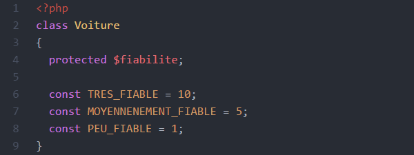
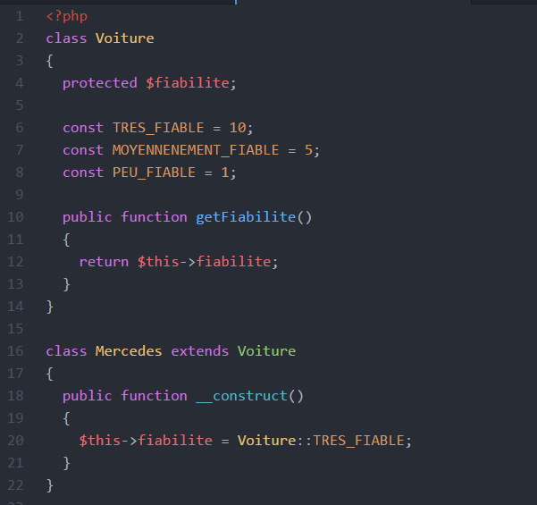
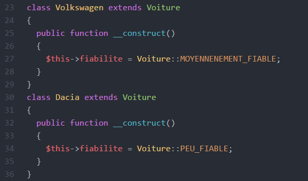
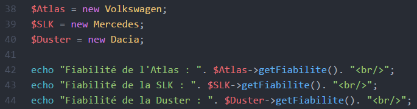
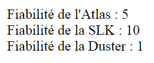

Comme leur nom l'indique, les constantes de classe sont des valeurs propres à une classe et qui ne varient jamais.
Démonstration de leur utilisation dans un exercice reprenant plusieurs concepts :
Imaginons une classe Voiture ayant un attribut fiabilité, et
déclarons-le protected afin de pouvoir ensuite créer des classes plus
spécifiques à différentes marques d'auto qui en héritent toutes.
Mettons pour faire simple qu'il y ait trois possibilités, et représentons-les
par une note sur 10 :

On déclare une constante avec le mot-clé const.
Par convention, on écrira toujours le nom en Maj. Notez que le fait de pouvoir
ainsi nommer les constantes rend le code plus clair/lisible (voir plus bas).
Commençons par créer une classe Mercedes afin que les objets-voitures instanciés à partir de cette dernière aient tous un attribut fiabilité, et vu qu'on parle de Mercedes, ils seront tous à 10 :
Par ailleurs, il faut pouvoir obtenir la note de fiabilité d'une voiture en dehors de sa classe, et ce, pour toutes les marques. On va donc ajouter un accesseur/getter à la classe Voiture :

Ensuite, on peut créer autant de voitures de marques différentes que l'on veut :   Résultat : 
Remarque : dans ce cas-ci, on aurait pu écrire le mot-clé parent à la place du nom de la classe Voiture pour en appeler les constantes. Essayez !